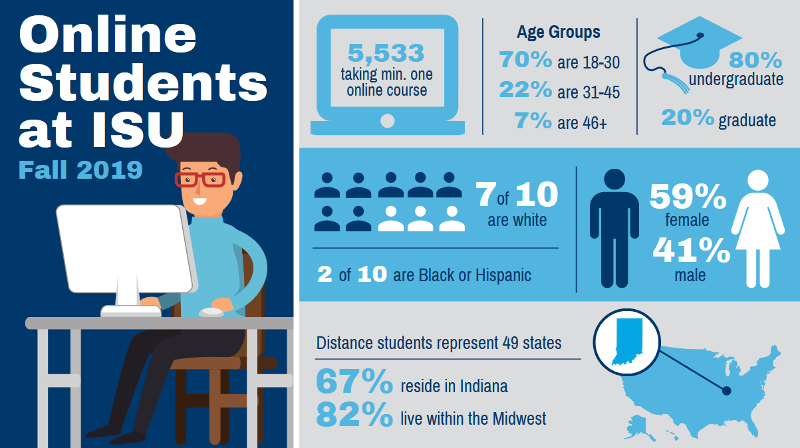

The purpose of this self-paced lesson is to present data on Indiana State University (ISU) students who take online courses, describe their learning preferences, and provide practical tips to help you establish professional relationships with your online students. By knowing who your online learners are, you will be able to design, facilitate, and guide the cognitive and social processes within your courses to realize meaningful learning.
As you can see on the infographic below, over 5,500 students took minimum one online course during Fall 2019. While the majority (80%) of them represented undergraduate students, the fifth of them took graduate-level courses. Based on their age, the majority were young adults and traditional students who come from high school, but older adults were also represented within the online learner community at ISU. This lesson will further analyze our online population and offer advice related to their learning preferences.

Learning Objectives
1. Identify key characteristics of the ISU online student population.
2. Select effective teaching strategies to meet the needs of the online student population.
3. Generate effective and productive relationships with online students.